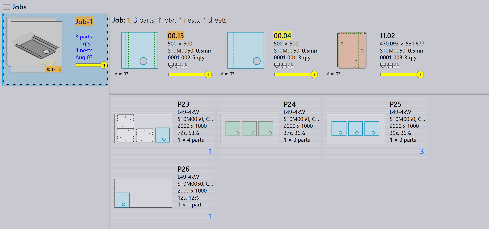

Προβολή εργασιών
Αυτή η ενότητα εξηγεί τις διάφορες προβολές που είναι διαθέσιμες στην προβολή εργασιών, συμπεριλαμβανομένων των εργασιών, εξαρτημάτων, κατανομών, επεξεργασίας, προσομοίωσης και εξαγωγής.
Εργασίες
Η επιλογή του jobs εμφανίζει μια λίστα όλων των εργασιών που είναι επί του παρόντος ρυθμισμένες στο λογισμικό. Μπορείτε να κάνετε διπλό κλικ σε μια εργασία για να δείτε τις λεπτομέρειές της ή να κάνετε δεξί κλικ για πρόσβαση σε πρόσθετες επιλογές.
-
Οι εργασίες εμφανίζονται σε προβολή πλακιδίων, όπου κάθε εργασία εμφανίζεται με βασικές ιδιότητες όπως Job ID, Job Ref, όνομα πελάτη, σύνολο εξαρτημάτων, ημερομηνία παράδοσης, γραμμή κατάστασης εργασίας κ.λπ.
-
Κάθε πλακίδιο εργασίας εμφανίζει επίσης εικόνες εξαρτημάτων σε μορφή στοίβας καρτών. Μπορείτε να μετακινηθείτε σε όλα τα εξαρτήματα μιας εργασίας χρησιμοποιώντας τον τροχό του ποντικιού.

Λεπτομέρειες εργασίας
-
Το διπλό κλικ σε ένα πλακίδιο ή το πάτημα του πλήκτρου Enter μετά την επιλογή ενός πλακιδίου μεταβάλλει την προβολή σε Λεπτομερή λειτουργία.
-
Η σελίδα λεπτομερειών εμφανίζει τη λίστα εξαρτημάτων μαζί με τις κατανεμημένες μεταλλικές πλάκες (διατάξεις), εάν υπάρχουν.
-
Χρησιμοποιήστε τα πλήκτρα Βέλος επάνω/κάτω για να μετακινηθείτε μεταξύ εργασιών στη σελίδα λεπτομερειών.
-
Η μετακίνηση του τροχού του ποντικιού πάνω από τη στοίβα εξαρτημάτων επισημαίνει το εξάρτημα τόσο στη λίστα εξαρτημάτων όσο και στις διατάξεις.
-
Η επιλογή μιας διάταξης επισημαίνει τη διάταξη και όλα τα εξαρτήματα που είναι κατανεμημένα σε αυτή στη λίστα εξαρτημάτων. Οι επισημάνσεις απενεργοποιούνται αυτόματα μετά από ένα λεπτό.

-
Nest summary:
-
Parts: Εμφανίζει τον συνολικό αριθμό των στοιχείων παραγγελίας και τη συνολική ποσότητα στην εργασία.
-
Sheets: Εμφανίζει τον συνολικό αριθμό των κατανεμημένων μεταλλικών πλακών μαζί με τη συνολική ποσότητα μεταλλικών πλακών.
-
-
Work Steps:
-
Bending: Εμφανίζει τη μηχανή που έχει αντιστοιχιστεί και την ποσότητα παραγγελίας προς επεξεργασία.
-
Cutting: Εμφανίζει τη μηχανή που έχει αντιστοιχιστεί και την ποσότητα παραγγελίας προς επεξεργασία.
-
Προτεραιότητα
-
Πρώτα, κάντε κλικ στο εικονίδιο Jobs στην αριστερή πλευρά της οθόνης, επιλέξτε την εργασία που θέλετε να επεξεργαστείτε και έπειτα κάντε κλικ στο edit στη δεξιά πλευρά της οθόνης (βεβαιωθείτε ότι είναι επιλεγμένη η επιλογή Jobs).
-
Εναλλακτικά, κάντε δεξί κλικ στην επιλεγμένη εργασία και κάντε κλικ στο εικονίδιο Check-out the document for editing.
-
Όταν κάνετε κλικ στο edit, εμφανίζεται το παράθυρο επεξεργασίας εργασίας. Σε αυτό το παράθυρο, μπορείτε να ορίσετε ή να αλλάξετε την προτεραιότητα για την εργασία.

-
Βάσει της προτεραιότητας του εξαρτήματος της εργασίας, το Job Reference στο πλακίδιο εργασίας χρωματίζεται ανάλογα.
-
Τα εξαρτήματα εργασίας ταξινομούνται πρώτα κατά προτεραιότητα και έπειτα κατά ημερομηνία παράδοσης. Χρωματίζονται επίσης ανάλογα με την προτεραιότητά τους.
-
Κατά την κατανομή, τα Επείγοντα εξαρτήματα λαμβάνονται υπόψη πρώτα, ακολουθούν τα Υψηλής, έπειτα τα Κανονικής και τέλος τα εξαρτήματα Χαμηλής προτεραιότητας τοποθετούνται στον υπόλοιπο χώρο στις μεταλλικές πλάκες κατανομής.
-
Οι μεταλλικές πλάκες κατανομής ταξινομούνται και χρωματίζονται επίσης ανάλογα με την προτεραιότητα.
| Προτεραιότητα εργασίας | Περιγραφή χρώματος |
|---|---|
|
Επείγον |
|
Κανονικό |
|
Υψηλό |
|
Χαμηλό |



Κατάσταση
-
Η γραμμή κατάστασης εργασίας χρησιμοποιεί χρωματικούς κώδικες για να υποδείξει την πρόοδο ή την κατάσταση της εργασίας με βάση την ποσότητα που έχει επεξεργαστεί ή απομένει.
-
Τα εξαρτήματα εντός της εργασίας και οι μεταλλικές πλάκες κατανομής επισημαίνονται επίσης με αντίστοιχα χρώματα για να αντικατοπτρίζουν την επιμέρους κατάστασή τους εντός της συνολικής ΕΡΓΑΣΙΑΣ.
-
Η χρωματική κωδικοποίηση βελτιώνει την παρακολούθηση και διασφαλίζει ότι οι χειριστές μπορούν να βλέπουν εύκολα την κατάσταση παραγωγής με μια ματιά.
| Κατάσταση εργασίας | Περιγραφή |
|---|---|
|
Not ready |
|
Nesting |
|
Ready |
|
Bend Planned |
|
Sheet missing |
|
Bending queue |
|
Cutting Queue |
|
Done(Completed) |


Εξαρτήματα
Η προβολή Ενεργά εξαρτήματα εμφανίζει όλα τα εξαρτήματα που βρίσκονται επί του παρόντος σε εξέλιξη εντός ενεργών εργασιών.
Κάθε εξάρτημα αναπαρίσταται ως πλακίδιο που εμφανίζει βασικές λεπτομέρειες όπως όνομα εξαρτήματος, διαστάσεις, υλικό, πάχος, ποσότητα και ημερομηνία παράδοσης. Εμφανίζεται επίσης μια οπτική προεπισκόπηση του εξαρτήματος.
Αυτή η προβολή βοηθά τους χρήστες να παρακολουθούν την κατάσταση επεξεργασίας μεμονωμένων εξαρτημάτων και να παρακολουθούν την πρόοδό τους στις τρέχουσες εργασίες.
Κατανομές
Η προβολή Ενεργές κατανομές εμφανίζει όλες τις κατανομές που βρίσκονται επί του παρόντος σε εξέλιξη εντός ενεργών εργασιών.
Κάθε κατανομή αναπαρίσταται με σχετικές λεπτομέρειες όπως ο αριθμός των εξαρτημάτων και η κατάσταση επεξεργασίας. Εμφανίζεται επίσης μια οπτική διάταξη των κατανεμημένων εξαρτημάτων.
Αυτή η προβολή βοηθά τους χρήστες να παρακολουθούν την πρόοδο της κατανομής και να παρακολουθούν πώς τα εξαρτήματα διατάσσονται και επεξεργάζονται στις μεταλλικές πλάκες.
Επεξεργασία
Η επιλογή Επεξεργασία σας επιτρέπει να τροποποιήσετε το επιλεγμένο στοιχείο.
Βάσει της τρέχουσας προβολής, το επιλεγμένο στιγμιότυπο ανοίγει για επεξεργασία:
-
Στην προβολή Εργασίες, η επιλεγμένη εργασία ανοίγει για επεξεργασία.
-
Στην προβολή Ενεργά εξαρτήματα, το επιλεγμένο εξάρτημα ανοίγει για επεξεργασία.
-
Στην προβολή Ενεργές κατανομές, η επιλεγμένη κατανομή ανοίγει για επεξεργασία.
Εξαγωγή csv
Η επιλογή Εξαγωγή σας επιτρέπει να επιλέξετε πληροφορίες εργασίας και να τις εξαγάγετε σε αρχείο CSV.
-
Κάντε κλικ στο εικονίδιο jobs.
-
Κάντε κλικ στην επιλογή export στη δεξιά πλευρά της οθόνης.
-
Εμφανίζεται ένα πλαίσιο διαλόγου που εμφανίζει τα διαθέσιμα πεδία:
-
Επιλέξτε τα πλαίσια ελέγχου για τα πεδία που θέλετε να εξαγάγετε.
-
Χρησιμοποιήστε την επιλογή Group By εάν θέλετε να ομαδοποιήσετε τα δεδομένα κατά επιλεγμένο πεδίο.
-
Κάντε κλικ στο Export για να δημιουργήσετε το αρχείο CSV.
Πρόσθετες πληροφορίες
Υπάρχουν επίσης τρία πρόσθετα εικονίδια στη δεξιά πλευρά της οθόνης, τα Simulate, Goto και Back.
-
Το Simulate θα ανοίξει το επιλεγμένο στοιχείο για μια πιο λεπτομερή προβολή.
-
Το Goto θα μεταφέρει την εστίαση και την εμφάνιση στο εξάρτημα ή την κατανομή που είναι επιλεγμένο.
-
Το Back θα σας επαναφέρει ένα επίπεδο πίσω από το σημείο όπου βρίσκεστε τώρα· για παράδειγμα, κάνοντας κλικ στο Back κατά τη διάρκεια της προσομοίωσης θα σας επαναφέρει στην κύρια εργασία και από μια εργασία θα σας επαναφέρει στην κύρια εμφάνιση εργασιών.